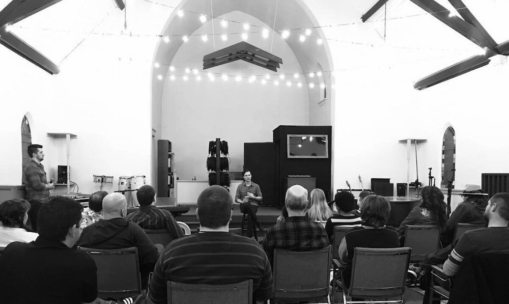
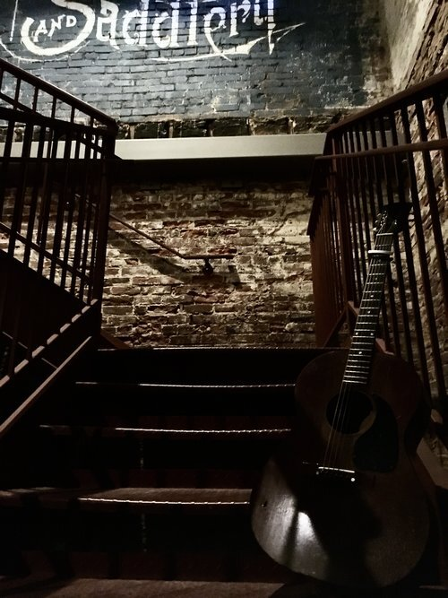
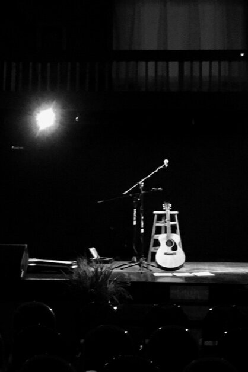

Below are workshops I do with singers, songwriters, performers, production teams, church teams, and leaders. I also offer the same content as a talk with Q&A after. If this would benefit you or your group, get in touch to schedule a private workshop or speaking engagement. Keep an eye out for public workshops as well.

For singers, performers, speakers, actors, teachers:
We’ll explore the journey of the Voice, from initial inspiration all the way to the listener’s ear. We’ll discuss the challenges of finding your voice and sharing it freely, and we will explore ways to find that freedom. We’ll explore alternatives to the goal of perfection on stage, letting go of pressure and anxiety, and using the stage as an opportunity for a truly connective and nutritive experience — both for the performer and the audience.
Upcoming Public Voice Workshop dates:
no public dates currently scheduled
For churches, worship leaders, worship teams, church production teams, and church leadership:
This is a 4-part workshop series for bringing the members of a worship ministry together under a unified purpose: to facilitate connection.
For the entire worship ministry — musicians, production, and other spiritual leadership. We’ll explore our intent as worship leaders and spiritual leaders as well as the possibility of a deep, tangible, honest, human expression of worship. We’ll explore finding our voice and how the very act of finding our sharing our voice can be worship. We’ll end our time with Q&A in order to have dialog about specific challenges.
For the singers. We’ll explore finding our voice and how the voice relates to worship and spiritual leadership. We’ll discuss the way the human voice functions, practically and as a mechanism for spiritual connection. We’ll work on listening. We’ll practice sharing and enjoying our voice together.
For the instrumentalists. We’ll explore finding our voice as instrumentalists and using our voice to create connection in worship. We’ll do some nuts-and-bolts work on building a song, balancing frequencies, self-mixing, the value of not playing at the right times, and we will work on listening.
For audio, video, and lighting teams. We’ll address pitfalls and challenges common in church-production, and we’ll work on a mindset and techniques which leverage minimalism and professionalism to create the clearest connection possible in the room.
For 10 years I led one of America’s fastest growing churches’ worship ministry, building a community of musicians, leaders, and technical artists. During this time, I learned the difference between building something which “works” — starting with the end result in mind; using volunteers to reach that goal — and cultivating something which genuinely embodies and unleashes the personality and potential of the artists and leaders of a community. This workshop will give tools — practical and philosophical — for achieving the latter.
2nd Mondays at 7pm at 820 SW Adams in Peoria IL
For songwriters and those interested in songwriting:
This is a space for songwriters to explore their song and Voice in a supportive and receptive environment.
I spend the first 20 minutes giving some tools and ideas to work with, and we spend the remaining time with songwriters and their songs.
Monthly, 2nd-Mondays at 7pm, downtown Peoria in the warehouse district. Open to the public.
Contributions are optional. If you find value in the experience and want to contribute, you may pay any amount you like in-person or online.
August 12 7PM, 820 SW Adams
September 9 7PM, 820 SW Adams
October 14 7PM, 820 SW Adams
November 11 7PM, 820 SW Adams
December 9 7PM, at 820 SW Adams
January 13 7PM, at 820 SW Adams
February 10 7PM, at 820 SW Adams
March 9 7PM, at 820 SW Adams
April canceled due to Covid19
May 11 7PM, via Zoom
June 8 7PM, via Zoom (link coming)

1st Sundays at 7pm at 3300 W Willow Knolls Drive in Peoria IL
Practice is a concert with guidance for being with whatever emerges (feelings, thoughts, hopes, fears, physical, spiritual, whatever) when we slow down.
This is an opportunity to let what/who wants to speak to us, speak.
It is work — not so much the hearing and feeling of the things, but the slowing, quieting, listening required in order to receive. It is work, but a good kind of work — a work which helps us grow in healthy ways.
I'll give minimal direction and my songs will be there to create a space for us to do this work. How deep you go and how much you do is up to you. I will be practicing as well. There is no pressure and no rush for any of us to "get someplace." It's only Practice. :)
If you find value in the experience and want to contribute, you may pay any amount you like, at the event or online. I’m making this pay-what-you-can so it can be available to everyone, so please only pay what feels right for you and your budget. And thank you for contributing — this helps me offer more of these in the future.
August 4 7PM, 3300 W Willow Knolls
September 1 7PM, 3300 W Willow Knolls
October 6 7PM, 3300 W Willow Knolls
November 3 7PM, 3300 W Willow Knolls
December & January — No Practice in Dec or Jan
February 2 6PM, 3300 W Willow Knolls
March 1 6PM, 3300 W Willow Knolls
...
Temporarily canceled due to Covid19. In the meantime, along similar lines, I'm creating a "From Quarantine" playlist of live music and explorations in what it means to be here-and-now admidst all that is happening.
